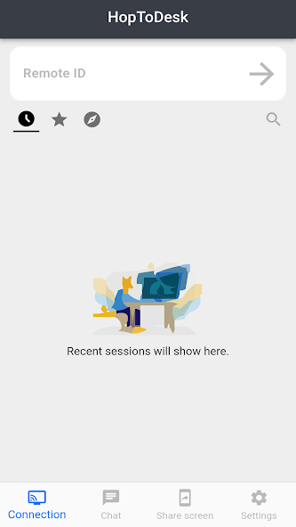

HopToDesk 用了快一年，说说那些当初没在意的事
从第一次连不上到每天随手开，这篇长期使用报告记录了我对 HopToDesk 的观感变化：越用越顺手的地方、越用越烦的地方，以及那个当初嫌麻烦现在离不开的功能。
从HopToDesk下载装它到现在快一年了。当初装它是因为 TeamViewer 偶尔会弹商业检测警告，想找个完全免费的替代品试一下——说实话第一次连不上的时候差点直接卸载。没想到就这么一路用下来，从"偶尔帮朋友远程救个急"变成了"每天至少开一次"。这篇不是评测，是用久了之后才看得清楚的那些东西。

当初为什么装它
原因很简单：不想在商业远控软件的免费版里被各种限制卡脖子。HopToDesk 的官网上明确说了个人和商用都免费，端到端加密，信号服务器不存内容——当时对"端到端加密"这四个字没什么概念，纯粹是冲着"免费不弹窗"去的。
越用越顺手的地方
最值得说的是密码机制的两种形态。刚装的时候觉得"还要输密码好麻烦"，现在才发现临时密码和永久密码的分工设计得很合理。临时密码每次启动自动换，适合一次性支援——帮朋友修完电脑下次密码就变了，不用特意去关权限。永久密码是在设置里手动指定的，用来做无人值守访问，比如我自己的办公电脑在家里想连上去拿个文件，设好永久密码之后不用家里有人点确认，直接连。
连接本身也比想象中稳。HopToDesk 的设计不需要端口转发，公司网络只放行 80 和 443 出站的时候，把防火墙模式打开，全部流量从中继的 443 端口走，照样能连通——这点在帮公司同事远程处理问题的时候救过好几次场。
工具栏里的"切换 sides"按钮是个意外惊喜。有时候帮朋友远程修东西，修到一半发现他比我还懂，想反过来让他操作我这边的电脑演示一下，不用断开重连，点一下按钮控制方向就对调了。当初翻HopToDesk文档的时候觉得这功能"听起来不错但用不上"，现在经常用。
越用越烦的地方
9 位设备 ID 偶尔还是会抄错。HopToDesk 的主窗口里，ID 旁边有个小小的按钮可以一键复制到剪贴板，我知道这个功能存在，但每次帮别人远程的时候还是会习惯性地让对方把 ID 念给我，然后手敲进去——手敲就容易错一两位，错了就要等十秒钟才报错。这个问题不是 HopToDesk 的锅，是我自己改不掉的坏习惯，但确实浪费时间。
还有会话里的画质调节。默认的自动模式在大多数网络下都跑得不错，但有时候跨运营商连接（比如电信连移动），自动模式会在流畅和清晰之间反复横跳，画面一会儿模糊一会儿掉帧。手动调到固定的帧率和编解码器之后就稳定了，但每次遇到都要调一次，有点烦。
离不开的和再没碰过的
离不开的功能有两个。一个是文件传输面板——远程控制的时候要传个安装包或者截图，直接从面板里拖过去就行，不用再开个网盘中转。另一个是隐私模式，也就是工具栏上的眼睛图标，打开之后被控端的物理屏幕会变黑。这个功能我自己电脑上用得最多：有时候在远程操作的时候不想让旁边路过的同事看到屏幕内容，点一下就黑了，被控端那边我照样操作。
再没碰过的功能是远程打印。HopToDesk 工具栏上有个打印机按钮，开启远程打印之后可以在主控端直接用被控端连接的打印机。我装了快一年，一次都没用到过——可能真的需要远程打印的场景太少见了，或者我根本不在那个场景里。
时间让它显出什么样
刚装的时候我高估了"端到端加密"这件事。当时觉得"加密嘛，都一样"，后来翻文档才明白 HopToDesk 的口径是会话内容、键盘输入、文件传输、聊天音频全部端到端加密，中继服务器看到的只是密文——这和很多远控产品说的"传输加密"不是一回事，后者是在服务器上解密再转发。还有那个每次连接都会显示的安全校验码，一开始我根本懒得核对，现在处理敏感数据之前会习惯性地让对方报一下，两边一致才放心。
低估的是"连不上排查清单"的命中率。刚装的时候连不上，第一反应是"这软件不行"，后来发现 HopToDesk 官方整理的排查顺序是按命中率从高到低排的：先查 ID 抄对没，再查被控端在线且 Ready 没，再查"允许入站连接"总开关——这三步查完基本上 80% 的问题就定位了。当初直接跳去翻日志和端口，白白浪费时间。
去留结论
目前没有卸载的打算。HopToDesk 满足了我的核心需求：免费、不弹窗、连接稳定、安全机制设计扎实。如果有一天它开始收费或者出现和商业远控软件一样的限制，那就是该换的时候了。但目前看来，那个信号还没来。
说个反直觉的感受：远控软件这东西，越用越觉得"够用"比"功能多"重要。HopToDesk 不是功能最全的远控软件，但它把该做的事情做稳了——连接能通、画面不卡、密码机制清晰、加密不糊弄——这就够了。考虑到不同地区的访问情况，这套 HopToDesk 中文资料我分别放在了GitHub、Gitee和GitCode，哪一个访问顺畅就用哪一个就行。